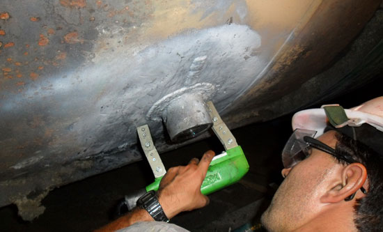
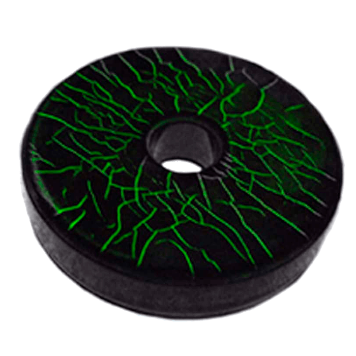

¿Qué es la inspección por Partículas Magnéticas?
Estos ensayos tienen la misión de detectar en una pieza las posibles discontinuidades (en materiales ferromagnéticos) que haya no solo en la superficie, sino también en las proximidades de ella (discontinuidades subsuperficiales). El método se basa en la atracción de un polvo metálico aplicado sobre la superficie hacia las discontinuidades presentes en el material bajo la acción de un campo magnético. La acumulación de este polvo metálico en torno a las discontinuidades revelará la localización de las mismas. Esta peculiaridad hace que este ensayo pueda realizarse en ciertas circunstancias a piezas pintadas o con imprimación.

